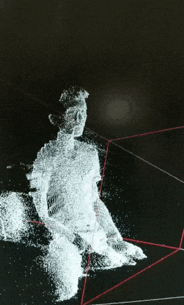
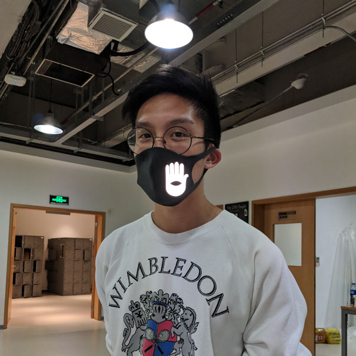
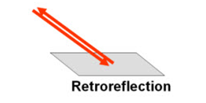
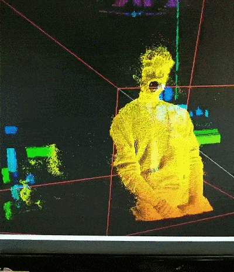

Anti-Facial Recognition Mask
├── Target -> Infrared Depth Cameras / 3D Facial Recognition
└── Method -> Infrared Light Disruption / Point Cloud Interference
• Dual-layer privacy protection (visual + depth)
• Infrared light reflection technique
• Low-tech counter-surveillance approach

Prototype demonstration showing depth interference
In many places in the world facial recognition technology is being used for a variety of purposes. Catching wrong-doers within a crowd of ten thousand and finding lost children in the giant Shanghai city metro system are all noble pursuits, but it comes at the cost of our biometric data being stored in giant databases. Although this technology advances quite rapidly, there are ways to counteract it using cheap and low-tech methods.

Mask design featuring retro-reflective materials
Rudimentary facial recognition is usually done by feature mapping, simply finding pixels that match the general features of a face within an image and returning it's position within it. However, these techniques usually yield inconsistent results with many false positives. Now, with advancements in machine learning based image analysis and 3D capture systems, facial recognition has become more robust and accurate. Now, 3D models of faces can be stored and then used to train this technology to become more accurate and robust, with very little false positives.

Technical analysis: infrared disruption methodology
In order to disrupt this technology I came up with the idea of a mask that not only obscures the face, but also disrupts and obscures the depth data being received by these volumetric facial recognition cameras. Most volumetric capture systems utilize infrared light projectors to calculate depth. Because of this, it is often advised not to have reflective surfaces when conducting volumetric capture. Exploiting this weakness is the idea behind the anti-surveillance mask. Retro-reflective material heavily reflects back the infrared patterns emitted by the infrared projector on a depth camera, flooding the camera with inaccurate data. This results in a hole being created on the retro-reflective material part of the point cloud.

Final result: dual-layer privacy protection
What results is a mask that not only obscures the face, but adds another layer of security to an individual's biometric data.